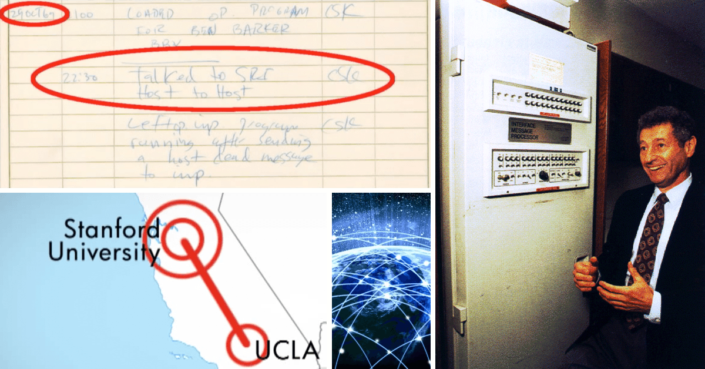

Vid den tiden heter nätverket Arpanet, och drivs av det amerikanska försvaret. I september 1969 länkas Arpanets första dator med en sprillans ny, specialbyggd maskin, en IMP – Interface Message Processor (som ni ser på bilden här ovanför). Och några veckor senare, 29 oktober klockan halv elva på kvällen skickar forskargruppen på UCLA, ledd av professor Leonard Kleinrock, iväg ett meddelande till en dator på Stanford drygt 50 mil därifrån. Det innehåller endast bokstäverna L och O (forskarna hade tänkt skriva LOGIN men servern kraschade).
Arpanet är ett av många nätverk som utvecklas under 60-talet i både USA, England och Frankrike.
Illustration av Jesper Wallerborg.
Leonard Kleinrock, till höger, är en av Arpanets viktigaste personer.
På den amerikanska forskningsmyndigheten ARPA (Advanced Research Projects Agency) jobbar datorforskaren Joseph Licklider. Han är den som kläcker idén till det som blir internet, men det finns många andra på myndigheten som gör betydande insatser för att förverkliga planerna. Leonard Kleinrock uppfinner kommunikationstekniken ”paketutbyte” (packet switching), Vinton Cerf and Robert Kahn kommer på TCP/IP-protokollet (som fortfarande utgör grunden för det internet vi har i dag).
En annan viktig upptäckt är tidsdelningssystemen (time-sharing), som innebär att flera personer kan använda samma dator. Det är ju egentligen det man gör på internet, delar datorer med varandra.
1971 skickas det första e-postmeddelandet på Arpanet – från en dator till en annan som står precis bredvid. Fler och fler datorer på amerikanska forskningsanstalter och laboratorium kopplas sedan upp, nätet växer och 1973 är det hela fyrtio datorer uppkopplade.
Samma år kopplas den första utländska datorn upp mot Arpanet utanför USA. Den är norsk och kopplas upp via satellit. Men om vi ska vara lite petiga går faktiskt den första internetkontakten via markstationen i Tanum i Bohuslän, som tar emot signalerna och skickar dem vidare till Norge. Först då blir internet internationellt.